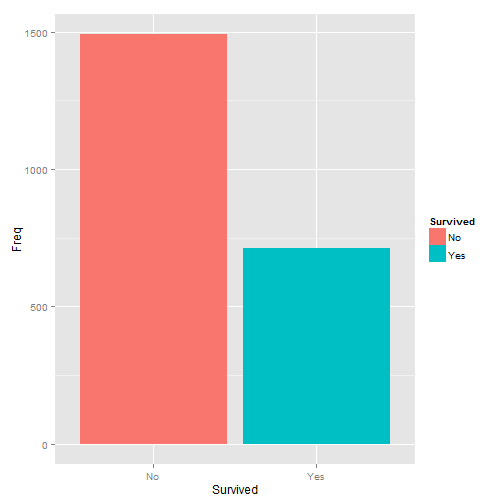

This presentation show information about 'Survival' app. 'Survival' app let us filter the information in 'Titanic' dataset and show the results by a chart and a data table.
'Titanic' data set provides information on the fate of passengers on the fatal maiden voyage of the ocean liner 'Titanic', summarized according to economic status (class), sex, age and survival.
Our app let us filter that information by 'Class', 'Sex' and 'Age' and give the numbers of survival and no survival passengers. The results can be show by a pie or by a bar graph and a table.
When the user change some thing in a category, or charge the graph type, the table and the graph are automatically updated.
Survival of passengers on the Titanic
Developing Data Products - Project
Antonio Lloris Amor
Introduction
'Titanic' Dataset
This dataset is included in package 'datasets' version 3.1.3. Originally is a matrix with 4 dimensions, but we transform it to a data frame because is easier to handle.
head(dataSet <- as.data.frame(Titanic),10)
## Class Sex Age Survived Freq
## 1 1st Male Child No 0
## 2 2nd Male Child No 0
## 3 3rd Male Child No 35
## 4 Crew Male Child No 0
## 5 1st Female Child No 0
## 6 2nd Female Child No 0
## 7 3rd Female Child No 17
## 8 Crew Female Child No 0
## 9 1st Male Adult No 118
## 10 2nd Male Adult No 154
Filtering Elements
Class
We can chouse 5 values for this category. Four of this values are from dataset, but 'All' must be added for let us don't use this category like filtering element. The values are:
levels(dataSet$Class)
## [1] "1st" "2nd" "3rd" "Crew"
- 'All'.
- '1st'. First class passengers.
- '2nd'. Second class passengers.
- '3rd'. Third class passengers.
- 'Crew'. Crew of the Titanic.
Sex
This category has three values (two from original dataset and 'All' added by us):
levels(dataSet$Sex)
## [1] "Male" "Female"
- 'All'. You must select this value when you don't want filter data by 'Sex'.
- 'Male'. Male passengers.
- 'Female'. Female passengers.
Age
The values for this category are (two from original dataset and 'All' added by us):
levels(dataSet$Age)
## [1] "Child" "Adult"
- 'All'. You must select this value when you don't want filter data by 'Age'.
- 'Child'. For children.
- 'Adult'. For adults.
Type of Graph
- 'Bar'. When you want a traditional bar chart.

- 'Pie'. A ggplot chart with polar coordenates. This is the default value.

Auxiliary panels
There are three auxiliary panels.
App Documentation
This panel show us information about the app and its caracteristics. The content of this panel is obtained from the file 'instructions.html'.
ui.R
In this panel we can see the code of the application (user interface), obtained from 'ui.R.html'.
server.R
Show the code of the server component for the application. This code is obtained from 'server.R.html'.